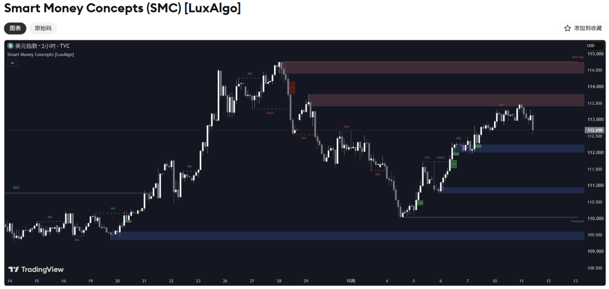
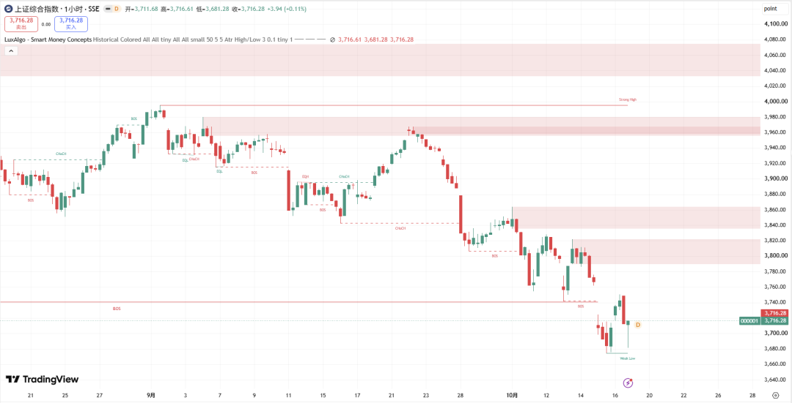
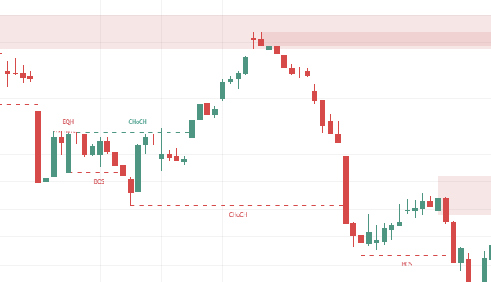
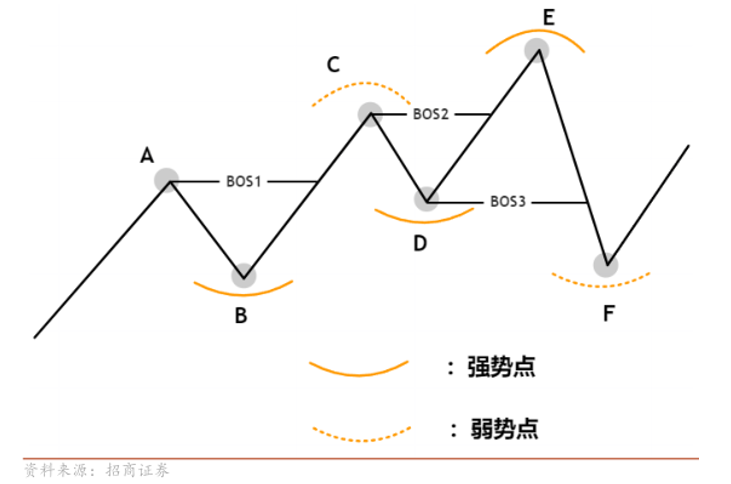
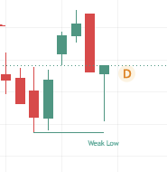
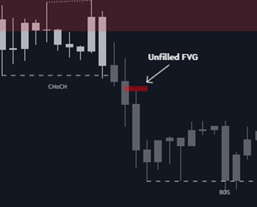
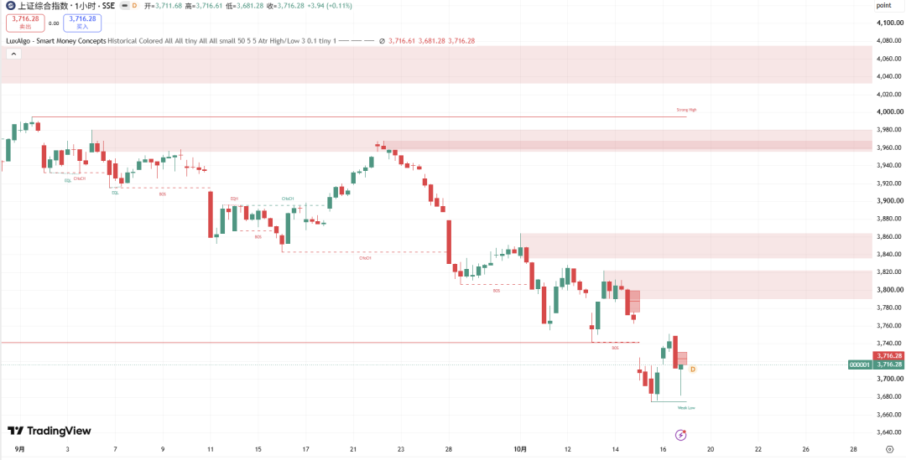
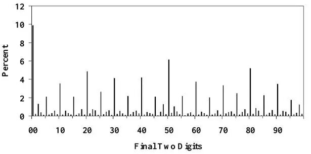

连续下跌背景之下，价格往往先企稳并有所反弹，随后却又跌破前低，构成下跌中继结构。在中继结构发生之前，不少人会去抄底，有时很难分清这是趋势转向，还是下跌途中的反弹。要把这段变化读清楚，还需要观察高低点的先后关系，以及价格在关键区域的反应。今天要聊的TradingView上的SMC指标，尝试把这些信息组织到同一张图里。
聪明钱看什么
SMC是Smart Money Concepts的简称，通常译为“聪明钱”。名称中的“聪明钱”，借指拥有专业研究与交易执行资源的银行、基金等机构资金。这套方法从专业资金的成交需求出发，尝试通过市场结构、流动性参照和价格运动留下的痕迹，推测资金活动可能集中的区域。
大额资金的执行需求，是理解这套视角的一个背景。
大额委托需要足够的对手盘。在不明显推动价格的情况下能完成多大的成交，是流动性的重要一面。如果短时间内消耗掉现有报价，就会产生市场冲击。国际清算银行市场委员会2020年的《外汇执行算法与市场运行》报告，讨论了把大额订单拆成小单、分散执行的做法。SMC则尝试从价格推进、回撤和关键位置的反应，推测这些成交行为可能留下的痕迹。
具体看这款指标使用的变量，核心仍是K线的开盘、最高、最低、收盘价格及其先后顺序。高低点怎样抬升或降低、哪一个先被突破，决定结构标签；结构突破前的参考价格区域和连续K线间特定的非重叠区间，分别形成订单块与形态缺口。相近高低点、价格在一段摆动中的相对位置，再提供流动性和折溢价参照。波动幅度还参与判定高低点是否足够接近、K线是否异常，机构账户和真实挂单不在这些判断的输入里。

图1 LuxAlgo指标说明页中的SMC功能示例
图1是作者的美元指数2小时示例。红蓝矩形分别标记空头与多头订单块，结构标签和强弱高低点描述方向与价位角色。把这套方法放到图2的上证指数1小时走势中，我们就从9月中旬开始、随后上探3960附近的那轮反弹看起。

图2 上证指数1小时图中的SMC标记
反弹与结构层级
先看9月中旬开始、随后上探3960附近的这段反弹。图3中的绿色CHoCH，出现在价格向上越过此前已识别的局部高点时。CHoCH是Change of Character，意为结构特征改变：对原本偏空的一套结构，这次反向突破使其转为偏多。它首先回答的是原有方向有没有受到破坏，后面能否发展成持续上涨，还要看接下来的高低点怎样形成。
如果在这套结构已经偏多后，价格又向上越过新识别的结构高点，程序就会标作BOS，即Break of Structure，结构突破，表示同方向继续推进。向下时对称处理：原本偏多，首次向下突破对应低点，是向下CHoCH；原本已经偏空，再向下突破，则是向下BOS。LuxAlgo按收盘价是否越过已识别的结构高低点来判断突破；小时K线尚未收盘时，实时更新的价格仍可能使标记发生变化。

图3 上证指数图中9月中下旬的反弹段
要分清绿色CHoCH改变了哪一层结构，先看图中的线型。
细小虚线对应内部结构，较长实线对应波段结构；两者都使用1小时K线，只是识别的摆动大小不同。内部结构可以随局部反弹先转强，波段方向则要由更大范围的结构突破来改变。招商证券《SMC技术面分析框架详解》第二篇也讨论了这种嵌套关系：小结构中的完整趋势，放到更大结构里，仍可能只是一次回调。
图3的绿色CHoCH就属于内部结构。之后价格上探3960附近，仍低于9月初接近4000的高点；反弹折返后，又向下突破内部结构低点，这段局部修复随之转弱。后来3740附近出现的较长红色BOS，则对应波段层面的向下延续：突破前，这一层已经记录为偏空，此处继续刷新其结构低点。因此，9月中旬的反弹曾改变内部方向，却没有发展成波段层面的向上转向。
波段方向还决定了Strong High（强势高点）与Weak Low（弱势低点）的角色。图2中3995附近的Strong High，是偏空结构中预期守住的高点；3675附近的Weak Low，则是顺势推进时预期进一步受到挑战的低点。“强”对应趋势延续时的防守一侧，“弱”对应顺势推进的一侧。偏多时，下方为Strong Low，上方为Weak High。

图4 招商证券研报中的强势点与弱势点示意
图4把角色切换画得更直观：价格向上突破A后，B成为上涨结构中的防守参照；后面再突破C，新的回调低点D承担类似角色。直到价格向下跌破D，结构转向，E才成为上方的强势点，F成为下方的弱势点。LuxAlgo中的强弱标签也由波段方向赋值，没有另算一套独立的强弱评分。因此，Weak Low表示该低点在当前下跌结构中的角色，并不等于底部已经确认。

红框与价格区间
结构方向理清后，再回到反弹经过的3960附近。
9月下旬，价格进入这里的浅红色矩形后折返。这些红框是空头订单块（Order Block，简称OB），保留了此前与结构突破有关的一段价格范围。后面的下跌又在3840—3860和3790—3820附近留下了较近的区域，为不同深度的反弹提供参照。
这些区域是怎样选出来的？
在结构突破发生后，从被突破支点到突破前的历史区间中筛选参考K线：空头突破寻找经过波动率处理后较高的参考位置，多头突破寻找较低的位置，再把对应高低价范围向右延展。指标还会参考价格的平均波动幅度，对异常宽幅K线作处理。因此，本图订单块的边界来自一套具体筛选规则，不能简单归结为“最后一根反向K线”。
对上证，还要把指数图与实际成交区分开。
指数由样本证券的价格计算而来，本身没有可以直接成交的指数委托簿。红框所描述的是指数价格的历史形态；相关股票、基金或其他交易产品上实际留下了哪些委托，需要另外的数据才能观察。
这些红框也会失效，判定口径与结构突破有所不同。截图采用按最高价、最低价判断失效的设置（High/Low）：最高价严格越过空头订单块上沿，或最低价严格跌破多头订单块下沿，对应区域就会移除。假设一根小时K线的上影线越过红框上沿，收盘却仍在结构高点下方，那么订单块可以先消失，波段方向未必同步改变，因为两套规则检查的价格不同。
订单块保留的是与结构突破有关的参考范围，FVG关注的则是快速运动中连续三根K线的空间关系。
FVG是Fair Value Gap，通常译为公允价值缺口。向下运动时，如果第三根K线的最高价低于第一根的最低价，两者影线之间就留下了一段没有重叠的区域，向上时反过来。脚本还会结合中间K线的收盘位置、实体幅度等条件作筛选。下图白色箭头指向的窄红色条带，就是指标原始示例中的一处下行FVG。

图5 指标原始示例中的下行FVG
这里没有重叠的是第一根和第三根K线，中间那根仍可能在FVG区域成交。所以，FVG与普通跳空存在区别，也不能直接证明这片价格上的实际成交量很小，更不意味着价格必须回来补齐。订单块与FVG重叠时，还可能来自同一段快速运动，不宜直接当成两份相互独立的证据。
如果进一步想描述反弹或回撤走了多深，就会用到Premium、Discount和Equilibrium，也就是溢价、折价与均衡位置。

按上证图中3995与3675附近的两端划定一段范围，中点约为3835；价格高于中点，位于这段摆动的上半区，低于中点则位于下半区。更换端点，中点也随之改变。这里的均衡位置只是区间中点，与基本面估值无关；下跌结构完全可以处在折价区，同时继续刷新低点。
高低点与流动性
前面的结构与区间，都可以用历史价格计算出来。SMC把相近高低点当作流动性参照，则多了一层关于订单触发的假设。EQH与EQL，分别表示容差范围内相近的高点和低点，不要求价格分毫不差。几次反弹停在相近高位，上方可能同时聚集突破买入和空头止损对应的买入需求；相近低点下方，则可能聚集相应的卖出需求。价格触及之后怎样运行，要看被激活的是哪类委托，以及对手方向有多少承接。
关于这种机制，可以参考Carol L. Osler的《Stop-Loss Orders and Price Cascades in Currency Markets》。研究先以纽约联储2002年第150号工作论文发布，后于2005年发表于《Journal of International Money and Finance》。作者结合外汇银行的委托记录与高频报价分析，发现条件单的触发汇率存在聚集特征，止损单还可能形成顺着原方向追加交易的正反馈，使价格在触及相关位置后加速。

图6 外汇条件单触发汇率的尾数分布。横轴为触发汇率最后两位数字，纵轴为订单占比
图6中，尾数为00等报价的订单占比，明显高于许多相邻尾数。论文进一步区分止损与止盈，发现两类订单的位置分布和触发后的价格反应存在差异。这项研究为条件单聚集及其价格影响提供了实证依据。
有了这层机制，就容易理解为什么突破前低后，价格有时反而跌得更快。若下破激活一批卖出止损，同时买方承接不足，卖出成交会继续消耗下方报价，强化原有下跌。若价格很快收回此前区间，随后又突破局部反弹高点，则增加了卖压被吸收、原方向推进受阻的证据。单独一根刺破低点的影线，还不足以还原订单触发与成交吸收的全过程，更无法识别交易者身份和意图。
回看与实时的差别
不过，前面的说明都是对已有图形的阅读。把SMC用于实时观察或复盘，还要分清图形画在哪里，以及使用者什么时候才能看见它。支点识别需要等待后续K线，标签却可能标回原来的高低点；订单块也可能等到结构突破后才生成，却把左端画回更早的参考K线上。如果直接把矩形左端对应的那根K线当作可用信号，就提前使用了后来才知道的信息。
SMC的精髓在于：价格在突破关键位置之后，通常不会简单停滞，而往往会再走出一段。这段“突破后的延续”如果能够被识别，哪怕有所延迟，也可以把原本模糊的追涨杀跌，变成有参照、有结构的交易决策。
有价值的不是“突破”这个动作本身，而是突破之后价格如何对待被突破的位置：是回踩确认后继续推进，还是假突破后迅速收回。前者往往意味着结构延续，后者则可能是流动性扫荡。SMC 通过结构标签、订单块、缺口和流动性参照，把这些“突破之后会发生什么”的信息组织到同一张图里，让交易者更容易判断当前这一段是趋势的延续，还是下跌/上涨途中的中继反弹。
后续如果大家有感兴趣的策略或指标解读，欢迎评论区进行讨论！
资料来源
[1] 上证综合指数1小时图，以及LuxAlgo指标说明页中的美元指数2小时功能示例。
[2] LuxAlgo，Smart Money Concepts SMC 指标发布说明及公开代码。
[3] 招商证券，张伟、王星缘，单周期市场结构基础理论SMC技术面分析框架详解一，2025年7月15日；多周期市场结构基础理论 SMC技术面分析框架详解二，2025年7月。图4取自第一篇第9页图9。
[4] Carol L. Osler，Stop-Loss Orders and Price Cascades in Currency Markets，Federal Reserve Bank of New York Staff Report No. 150，2002年7月。期刊版本发表于Journal of International Money and Finance，24卷第2期，2005年，第219—241页。出版信息见纽约联储论文主页。
[5] 上海证券交易所，上证综合指数基本信息。
[6] TradingView，Pine Script官方文档 Repainting。
[7] LuxAlgo，Smart Money Concepts术语说明。
[8] 国际清算银行市场委员会，FX execution algorithms and market functioning。
本文用于指标科普与研究讨论，不构成投资建议。截图价格和历史案例仅用于解释分析方法，不代表对相关资产后续走势的判断。投资有风险，决策须谨慎！